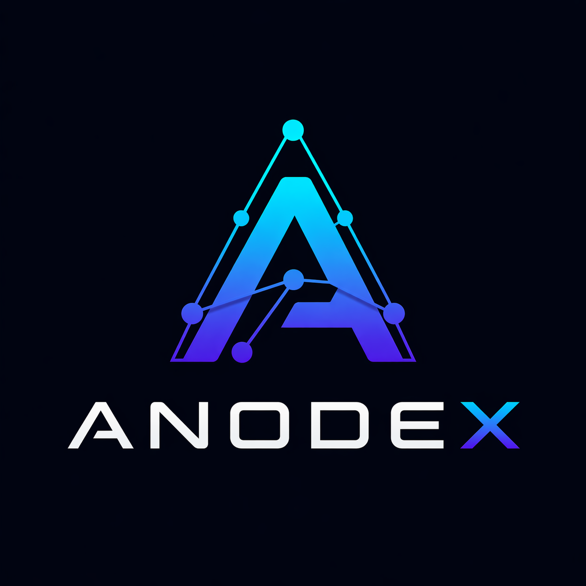

Local-first AI
Keep inference, context, and workflow data close to your hardware instead of handing it off to the cloud.

AnodexAnodex is a local-first AI workspace built for privacy, speed, and total ownership.
Keep inference, context, and workflow data close to your hardware instead of handing it off to the cloud.
Built around ownership, local storage, and a privacy-first model that respects your machine.
Organize conversations, files, and tasks around focused projects that stay easy to revisit.
Designed for fast thinking, technical workflows, and creative iteration without friction.
Ready to pair with local models so you can run powerful AI experiences on your own stack.
Glass surfaces, glowing edges, and a focused layout keep the interface modern without clutter.
Anodex is designed for users who want AI without surrendering their files, context, or control. It runs locally, avoids cloud dependency, and keeps your projects grounded in a workspace you own.
That makes it a strong fit for local models, private chats, file-aware workflows, and focused daily use on a desktop you trust.
Core experience, visual language, and local-first workflow foundations are actively being refined.
The initial public release is being prepared with a focus on polish, reliability, and a clean first run.